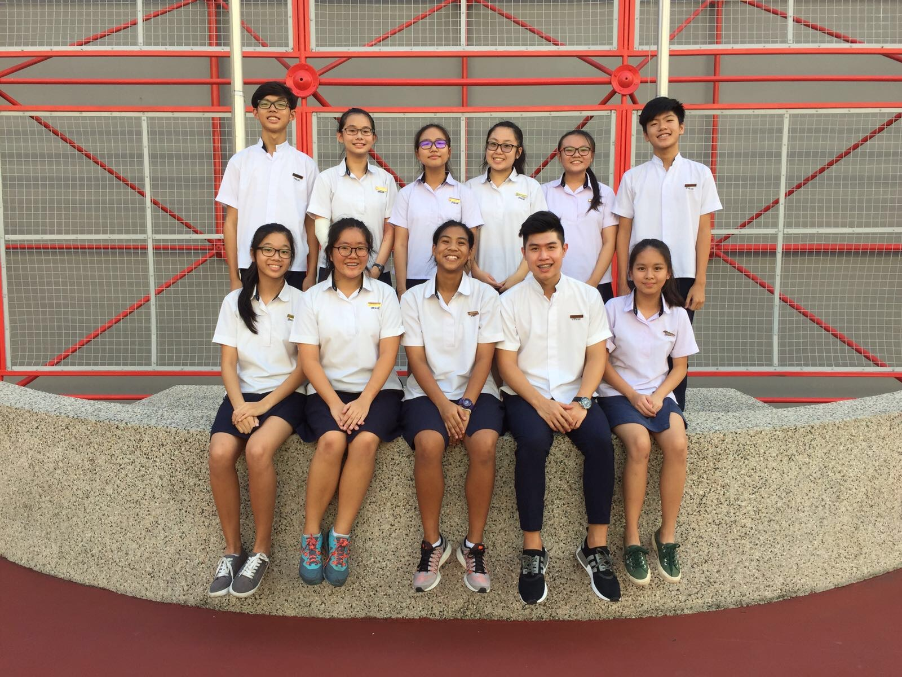
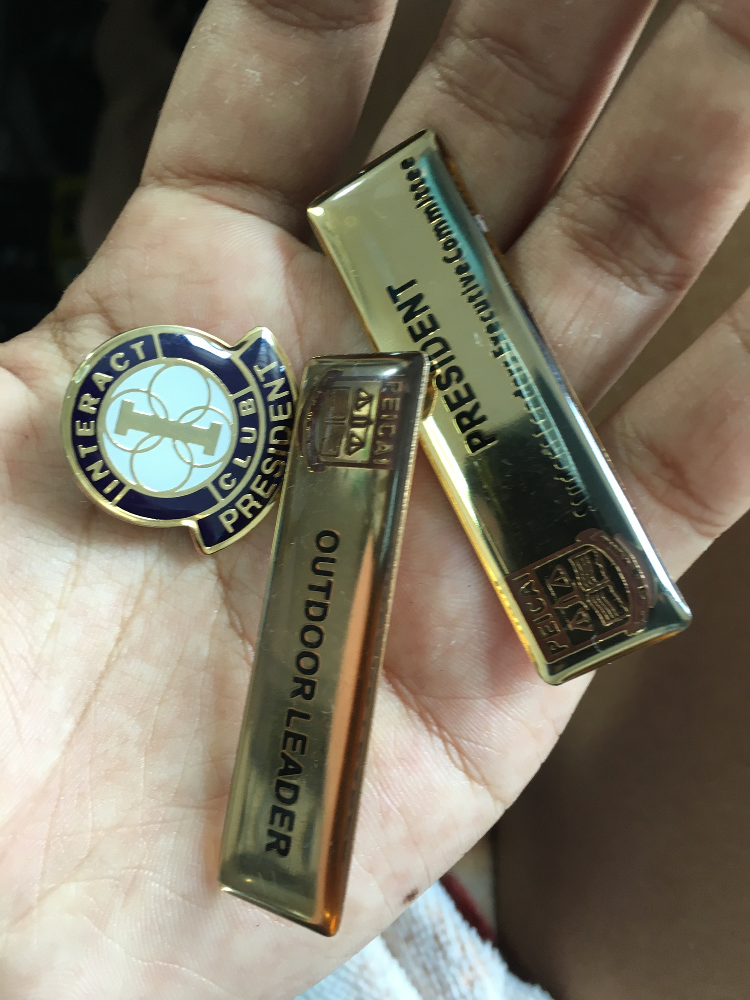

Me Before the States


You found the easter egg :-).Here are some fragments of memories from another part of the world, and another part of me.
Before coming to the US, I spent part of my life in Singapore. It was a fun and fruitful experience. One of the highlights was being elected as the student council president in my secondary school. I had the opportunity to give several speeches during that time. Here are the PDFs of those speeches, which I have kept as mementos of that chapter in my life. Many more updates and reflections to come, but for now, here are the speeches.
The Rally Speech is the one I gave while running for student council president. The Incoming Speech came right after I was elected. The Final Speech was my farewell when I stepped down at the end of my term. The Graduation Speech is the valedictorian address I gave at our graduation ceremony.
A small note before you read: English was still pretty new to me back then, so please be kind about the typos and grammatical slip-ups. I've kept them as-is — they are part of the memory, and honestly part of how I got here.
Rally Speech
My pitch when running for student council president.
Incoming Speech
Delivered after being elected as student council president.
Final Speech
My farewell address when I stepped down at the end of my term.
Graduation Speech
The valedictorian address I gave at our graduation ceremony.